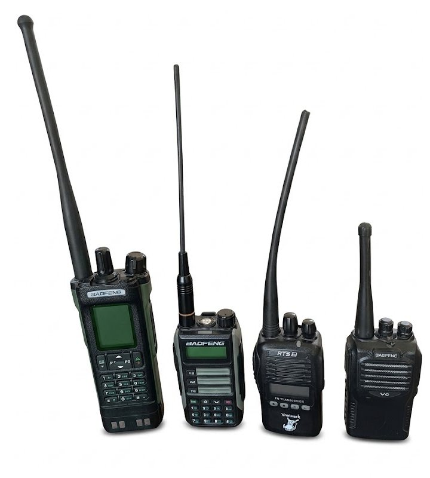
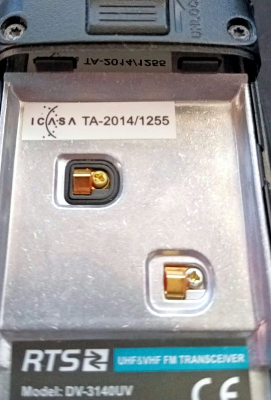

What radio do you need?
Inside the car, or an antenna outside?
A vehicle's metal body acts like a partial Faraday cage: radio waves bounce off the metal and only some get out through the windows. With the antenna outside the vehicle, and higher up, a radio reaches several times further.
ZARA60 or ZARA130? Quarter-wave or 5/8
The two common VHF vehicle antennas in South Africa are Webb Industries' ZARA60 (a quarter-wave) and ZARA130 (a 5/8-wave). The ZARA130 has more gain. That doesn't make it better everywhere.
Tuning: which channels each antenna covers
Where each antenna sends its signal
ZARA60 (quarter-wave): rounder, more signal up and down slopesZARA130 (5/8-wave): furthest toward the horizon
The patterns are the textbook ideal (a thin whip on an endless metal ground), at the same power. On a real roof both tilt upward, but the trade-off stays the same.
Handheld or fitted: pros and cons
Where to get a VHF licence
Club VHF channels are licensed to an issuer, who authorises its members to use them for a year at a time (1 April to 31 March).
Which radios are illegal, and why
Four radios: legal or not?

What ICASA type approval means

Analogue or digital?
Sources
Law and regulators first, then standards, issuers and makers. Read on .